0. Importaciones#
import os
import warnings
warnings.filterwarnings('ignore')
import joblib
import pandas as pd
import numpy as np
import seaborn as sns
import matplotlib.pyplot as plt
from mpl_toolkits.mplot3d import Axes3D
from sklearn.model_selection import train_test_split
from sklearn.experimental import enable_iterative_imputer
from sklearn.impute import IterativeImputer
from sklearn.preprocessing import StandardScaler
from sklearn.naive_bayes import GaussianNB
from sklearn.neighbors import KNeighborsClassifier
from sklearn.linear_model import LogisticRegression
from sklearn.ensemble import RandomForestClassifier
from sklearn.svm import SVC
from sklearn.metrics import precision_score, recall_score, accuracy_score, f1_score, roc_auc_score, confusion_matrix, roc_curve
from sklearn.metrics import mean_absolute_percentage_error, mean_squared_error, r2_score
from sklearn.linear_model import LinearRegression, Ridge, Lasso
from sklearn.neighbors import KNeighborsRegressor
from sklearn.ensemble import RandomForestRegressor
from sklearn.svm import SVR
from xgboost import XGBRegressor
from statsmodels.stats.diagnostic import normal_ad
from statsmodels.stats.diagnostic import acorr_ljungbox
from xgboost import XGBClassifier
from statsmodels.stats.outliers_influence import variance_inflation_factor
1. Satiscaccion clientes#
df = pd.read_csv("train.csv")
dfTest = pd.read_csv('test.csv')
1.1. EDA#
df['TARGET'].unique()
array([0, 1], dtype=int64)
df.describe()
| ID | var3 | var15 | imp_ent_var16_ult1 | imp_op_var39_comer_ult1 | imp_op_var39_comer_ult3 | imp_op_var40_comer_ult1 | imp_op_var40_comer_ult3 | imp_op_var40_efect_ult1 | imp_op_var40_efect_ult3 | ... | saldo_medio_var33_hace2 | saldo_medio_var33_hace3 | saldo_medio_var33_ult1 | saldo_medio_var33_ult3 | saldo_medio_var44_hace2 | saldo_medio_var44_hace3 | saldo_medio_var44_ult1 | saldo_medio_var44_ult3 | var38 | TARGET | |
|---|---|---|---|---|---|---|---|---|---|---|---|---|---|---|---|---|---|---|---|---|---|
| count | 76020.000000 | 76020.000000 | 76020.000000 | 76020.000000 | 76020.000000 | 76020.000000 | 76020.000000 | 76020.000000 | 76020.000000 | 76020.000000 | ... | 76020.000000 | 76020.000000 | 76020.000000 | 76020.000000 | 76020.000000 | 76020.000000 | 76020.000000 | 76020.000000 | 7.602000e+04 | 76020.000000 |
| mean | 75964.050723 | -1523.199277 | 33.212865 | 86.208265 | 72.363067 | 119.529632 | 3.559130 | 6.472698 | 0.412946 | 0.567352 | ... | 7.935824 | 1.365146 | 12.215580 | 8.784074 | 31.505324 | 1.858575 | 76.026165 | 56.614351 | 1.172358e+05 | 0.039569 |
| std | 43781.947379 | 39033.462364 | 12.956486 | 1614.757313 | 339.315831 | 546.266294 | 93.155749 | 153.737066 | 30.604864 | 36.513513 | ... | 455.887218 | 113.959637 | 783.207399 | 538.439211 | 2013.125393 | 147.786584 | 4040.337842 | 2852.579397 | 1.826646e+05 | 0.194945 |
| min | 1.000000 | -999999.000000 | 5.000000 | 0.000000 | 0.000000 | 0.000000 | 0.000000 | 0.000000 | 0.000000 | 0.000000 | ... | 0.000000 | 0.000000 | 0.000000 | 0.000000 | 0.000000 | 0.000000 | 0.000000 | 0.000000 | 5.163750e+03 | 0.000000 |
| 25% | 38104.750000 | 2.000000 | 23.000000 | 0.000000 | 0.000000 | 0.000000 | 0.000000 | 0.000000 | 0.000000 | 0.000000 | ... | 0.000000 | 0.000000 | 0.000000 | 0.000000 | 0.000000 | 0.000000 | 0.000000 | 0.000000 | 6.787061e+04 | 0.000000 |
| 50% | 76043.000000 | 2.000000 | 28.000000 | 0.000000 | 0.000000 | 0.000000 | 0.000000 | 0.000000 | 0.000000 | 0.000000 | ... | 0.000000 | 0.000000 | 0.000000 | 0.000000 | 0.000000 | 0.000000 | 0.000000 | 0.000000 | 1.064092e+05 | 0.000000 |
| 75% | 113748.750000 | 2.000000 | 40.000000 | 0.000000 | 0.000000 | 0.000000 | 0.000000 | 0.000000 | 0.000000 | 0.000000 | ... | 0.000000 | 0.000000 | 0.000000 | 0.000000 | 0.000000 | 0.000000 | 0.000000 | 0.000000 | 1.187563e+05 | 0.000000 |
| max | 151838.000000 | 238.000000 | 105.000000 | 210000.000000 | 12888.030000 | 21024.810000 | 8237.820000 | 11073.570000 | 6600.000000 | 6600.000000 | ... | 50003.880000 | 20385.720000 | 138831.630000 | 91778.730000 | 438329.220000 | 24650.010000 | 681462.900000 | 397884.300000 | 2.203474e+07 | 1.000000 |
8 rows × 371 columns
df.info()
<class 'pandas.core.frame.DataFrame'>
RangeIndex: 76020 entries, 0 to 76019
Columns: 371 entries, ID to TARGET
dtypes: float64(111), int64(260)
memory usage: 215.2 MB
df.isnull().sum() #No hay datos faltantes
ID 0
var3 0
var15 0
imp_ent_var16_ult1 0
imp_op_var39_comer_ult1 0
..
saldo_medio_var44_hace3 0
saldo_medio_var44_ult1 0
saldo_medio_var44_ult3 0
var38 0
TARGET 0
Length: 371, dtype: int64
bars = df['TARGET'].value_counts().plot(kind='bar',)
plt.title("Distribución de la variable target")
for i, count in enumerate(df['TARGET'].value_counts()):
bars.text(i, count + 0.05, str(count), ha='center', va='bottom')
plt.show()
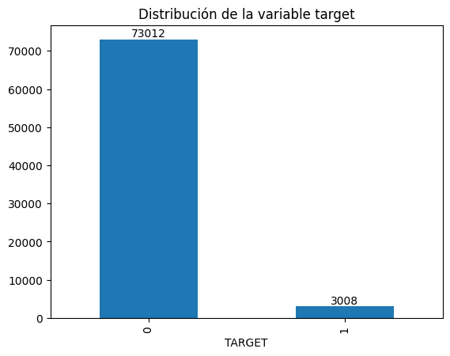
variables_seleccionadas = df.select_dtypes(include=[np.number]).columns[1:11] # Seleccionar 10 variables numéricas
df_ = df[variables_seleccionadas]
df_.hist(bins=15, figsize=(15, 10))
plt.show()

for column in variables_seleccionadas:
sns.boxplot(data=df_, x=column)
plt.title(f"Boxplot: {column}")
plt.show()
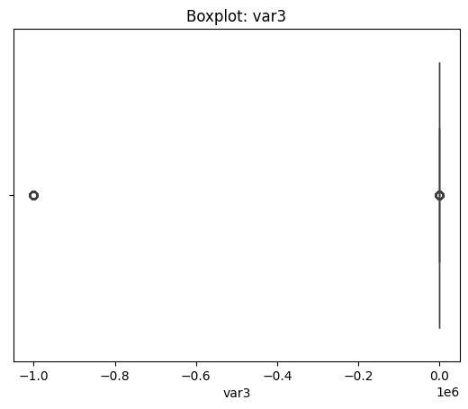
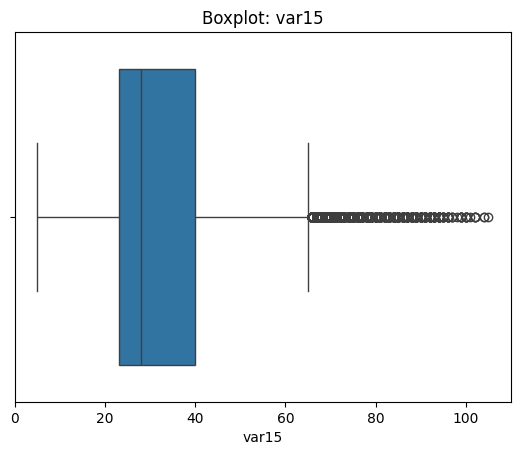
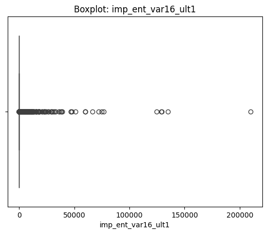
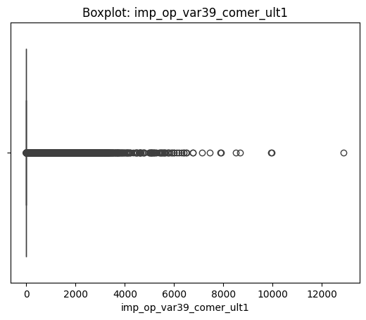
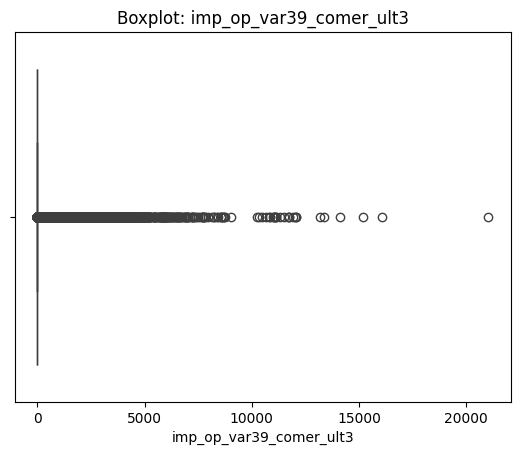
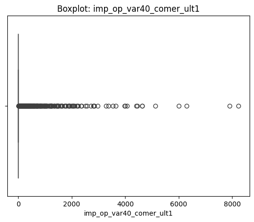
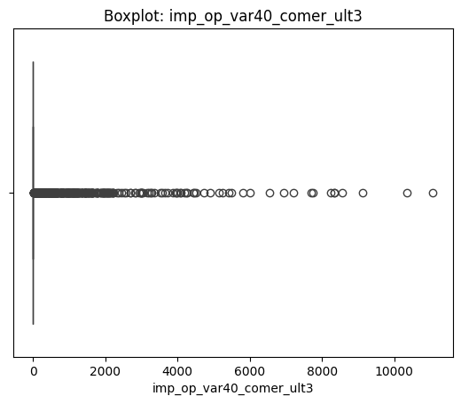
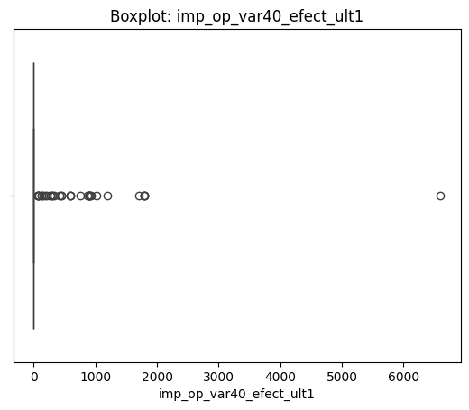
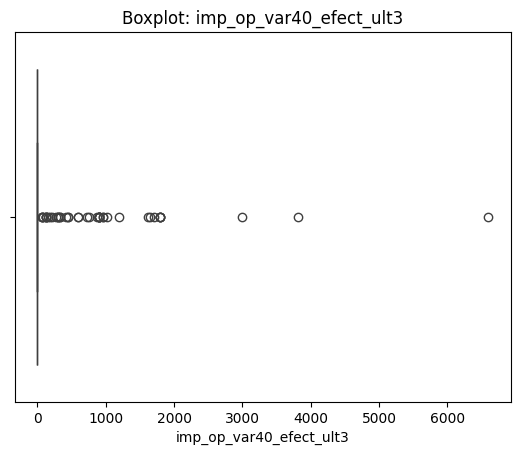
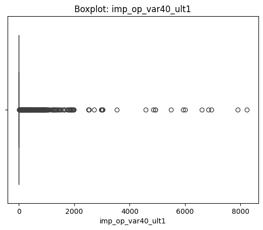
# lleva mucho tiempo
for i, column_x in enumerate(variables_seleccionadas[:5]):
for j, column_y in enumerate(variables_seleccionadas[5:10]):
sns.scatterplot(data=df_, x=column_x, y=column_y)
sns.regplot(data=df_, x=column_x, y=column_y, scatter_kws={'s':10})
plt.title(f"{column_x} --- {column_y}")
plt.show()
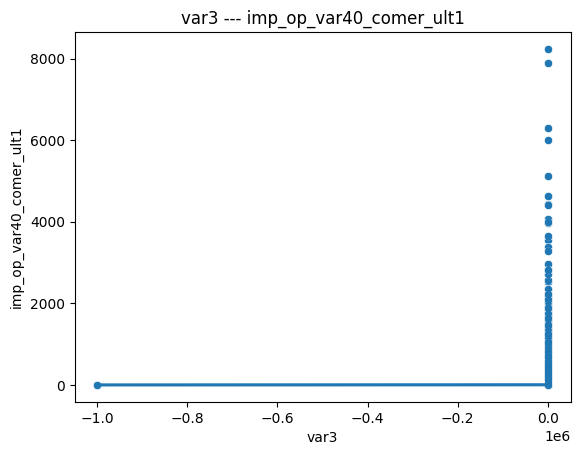
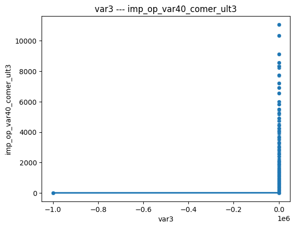
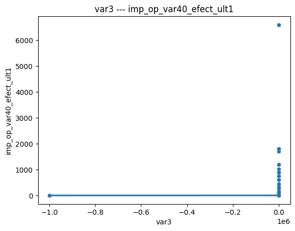
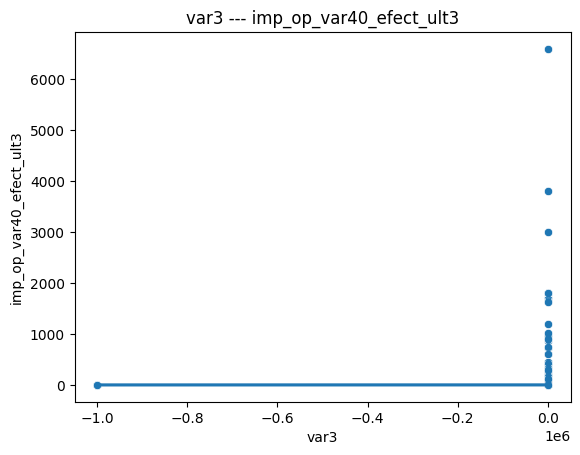
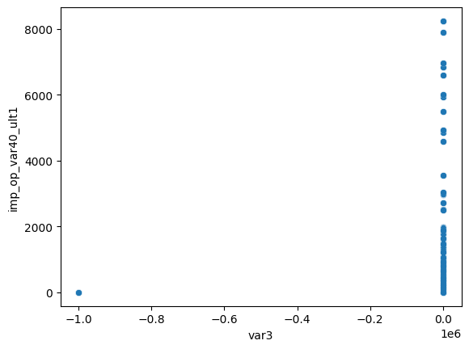
---------------------------------------------------------------------------
KeyboardInterrupt Traceback (most recent call last)
Cell In[10], line 5
3 for j, column_y in enumerate(variables_seleccionadas[5:10]):
4 sns.scatterplot(data=df_, x=column_x, y=column_y)
----> 5 sns.regplot(data=df_, x=column_x, y=column_y, scatter_kws={'s':10})
6 plt.title(f"{column_x} --- {column_y}")
7 plt.show()
File ~\AppData\Local\Programs\Python\Python312\Lib\site-packages\seaborn\regression.py:775, in regplot(data, x, y, x_estimator, x_bins, x_ci, scatter, fit_reg, ci, n_boot, units, seed, order, logistic, lowess, robust, logx, x_partial, y_partial, truncate, dropna, x_jitter, y_jitter, label, color, marker, scatter_kws, line_kws, ax)
773 scatter_kws["marker"] = marker
774 line_kws = {} if line_kws is None else copy.copy(line_kws)
--> 775 plotter.plot(ax, scatter_kws, line_kws)
776 return ax
File ~\AppData\Local\Programs\Python\Python312\Lib\site-packages\seaborn\regression.py:384, in _RegressionPlotter.plot(self, ax, scatter_kws, line_kws)
381 self.scatterplot(ax, scatter_kws)
383 if self.fit_reg:
--> 384 self.lineplot(ax, line_kws)
386 # Label the axes
387 if hasattr(self.x, "name"):
File ~\AppData\Local\Programs\Python\Python312\Lib\site-packages\seaborn\regression.py:429, in _RegressionPlotter.lineplot(self, ax, kws)
427 """Draw the model."""
428 # Fit the regression model
--> 429 grid, yhat, err_bands = self.fit_regression(ax)
430 edges = grid[0], grid[-1]
432 # Get set default aesthetics
File ~\AppData\Local\Programs\Python\Python312\Lib\site-packages\seaborn\regression.py:229, in _RegressionPlotter.fit_regression(self, ax, x_range, grid)
227 yhat, yhat_boots = self.fit_logx(grid)
228 else:
--> 229 yhat, yhat_boots = self.fit_fast(grid)
231 # Compute the confidence interval at each grid point
232 if ci is None:
File ~\AppData\Local\Programs\Python\Python312\Lib\site-packages\seaborn\regression.py:250, in _RegressionPlotter.fit_fast(self, grid)
247 if self.ci is None:
248 return yhat, None
--> 250 beta_boots = algo.bootstrap(X, y,
251 func=reg_func,
252 n_boot=self.n_boot,
253 units=self.units,
254 seed=self.seed).T
255 yhat_boots = grid.dot(beta_boots).T
256 return yhat, yhat_boots
File ~\AppData\Local\Programs\Python\Python312\Lib\site-packages\seaborn\algorithms.py:99, in bootstrap(*args, **kwargs)
97 for i in range(int(n_boot)):
98 resampler = integers(0, n, n, dtype=np.intp) # intp is indexing dtype
---> 99 sample = [a.take(resampler, axis=0) for a in args]
100 boot_dist.append(f(*sample, **func_kwargs))
101 return np.array(boot_dist)
KeyboardInterrupt:
imputer = IterativeImputer()
df[variables_seleccionadas] = imputer.fit_transform(df[variables_seleccionadas])
def calcular_vif(dataframe):
vif_data = pd.DataFrame()
vif_data["feature"] = dataframe.columns
vif_data["VIF"] = [variance_inflation_factor(dataframe.values, i) for i in range(len(dataframe.columns))]
return vif_data
# Iterar eliminación de variables con VIF >= 10
while True:
vif_data = calcular_vif(df[variables_seleccionadas])
max_vif = vif_data["VIF"].max()
if max_vif >= 10:
feature_to_remove = vif_data.loc[vif_data["VIF"].idxmax(), "feature"]
variables_seleccionadas = variables_seleccionadas.drop(feature_to_remove)
else:
break
1.2. Entrenamiento y métricas#
# Separación de datos en entrenamiento y prueba
X = df[df.columns[:-1]]
Y = df['TARGET']
X_train, X_test, y_train, y_test = train_test_split(X, Y, test_size=0.3, random_state=42)
# Escalamiento de datos
scaler = StandardScaler()
X_train = scaler.fit_transform(X_train)
X_test = scaler.transform(X_test)
modelos = {
"Clasificasión Bayesiana": GaussianNB(),
"K-NN": KNeighborsClassifier(),
"L1-L2 Penalty Logistic Regression": LogisticRegression(penalty='l2', solver='liblinear'),
"Random Forest": RandomForestClassifier(),
"XGBoost": XGBClassifier(use_label_encoder=False, eval_metric='logloss'),
"SVM": SVC(probability=True)
}
resultados = []
cont=0
for nombre, modelo in modelos.items():
modelo.fit(X_train, y_train)
joblib.dump(modelo, f'modeloP1-{nombre}.pkl')
y_pred = modelo.predict(X_test)
y_prob = modelo.predict_proba(X_test)[:, 1]
precision = precision_score(y_test, y_pred)
recall = recall_score(y_test, y_pred)
accuracy = accuracy_score(y_test, y_pred)
f1 = f1_score(y_test, y_pred)
auc = roc_auc_score(y_test, y_prob)
resultados.append({
"Modelo": nombre,
"Precision": precision,
"Recall": recall,
"Accuracy": accuracy,
"F1-Score": f1,
"AUC": auc
})
cont=cont+1
print(f'modelo {i}/6')
tabla_resultados = pd.DataFrame(resultados)
tabla_resultados
1.3. prediccion CSV de prueba#
nombreModelos = ["Clasificasión Bayesiana","K-NN","L1-L2 Penalty Logistic Regression","Random Forest","XGBoost","SVM"]
dfPredicciones = pd.DataFrame()
for nombre in nombreModelos:
modelo = joblib.load(f'modeloP1-{nombre}.pkl')
prediccion = pd.Series(modelo.predict(dfTest.values))
dfPredicciones[nombre] = prediccion
bars = prediccion.value_counts().plot(kind='bar',)
plt.title(f'Distribución predicciones {nombre}')
for i, count in enumerate(prediccion.value_counts()):
bars.text(i, count + 0.05, str(count), ha='center', va='bottom')
plt.show()
joblib.dump(dfPredicciones, f'P1-resultados.pkl')
modelo = joblib.load(f'modeloP1-{nombre}.pkl')
dfPredicciones
2. Fisioterapia#
2.1. Carga#
carpeta = 'fisioterapia_dataset_regresion'
subjets = ['s1', 's2', 's3', 's4', 's5']
exercises = ['e1', 'e2', 'e3', 'e4', 'e5', 'e6', 'e7', 'e8']
units = ['u1', 'u2', 'u3', 'u4', 'u5']
nameTrain = 'template_session.txt'
nameTest = 'test.txt'
dataframesEntrenamiento = []
dataframesPruebas = []
for subjet in subjets:
for exercise in exercises:
for unit in units:
rutaTrain = os.path.join(carpeta, subjet, exercise, unit, nameTrain)
rutaTest = os.path.join(carpeta, subjet, exercise, unit, nameTest)
dataframesEntrenamiento.append(pd.read_csv(rutaTrain, sep=';'))
dataframesPruebas.append(pd.read_csv(rutaTest, sep=';'))
dataframesEntrenamiento[0]
| time index | acc_x | acc_y | acc_z | gyr_x | gyr_y | gyr_z | mag_x | mag_y | mag_z | |
|---|---|---|---|---|---|---|---|---|---|---|
| 0 | 1 | -9.665799 | -1.677241 | 0.615063 | -0.014956 | 0.004388 | 0.010589 | 0.587318 | 0.455106 | -0.094949 |
| 1 | 2 | -9.665806 | -1.684737 | 0.622513 | 0.000607 | -0.003094 | -0.007589 | 0.587428 | 0.455621 | -0.093364 |
| 2 | 3 | -9.628410 | -1.699724 | 0.585751 | 0.006007 | 0.000557 | -0.004879 | 0.588389 | 0.454722 | -0.094907 |
| 3 | 4 | -9.628372 | -1.684836 | 0.600733 | -0.003085 | -0.000281 | -0.000340 | 0.588673 | 0.455759 | -0.092664 |
| 4 | 5 | -9.643291 | -1.639893 | 0.585661 | -0.002932 | -0.006807 | -0.013043 | 0.589193 | 0.453927 | -0.093143 |
| ... | ... | ... | ... | ... | ... | ... | ... | ... | ... | ... |
| 2182 | 2183 | -9.682711 | -1.706522 | 0.350804 | -0.005728 | -0.003561 | -0.001633 | 0.588366 | 0.459061 | -0.064641 |
| 2183 | 2184 | -9.667724 | -1.691574 | 0.328685 | -0.012997 | 0.010897 | 0.005710 | 0.587457 | 0.460252 | -0.065893 |
| 2184 | 2185 | -9.667731 | -1.684025 | 0.306292 | -0.020050 | -0.000178 | -0.008818 | 0.587153 | 0.456937 | -0.065174 |
| 2185 | 2186 | -9.667744 | -1.699018 | 0.321194 | -0.011103 | 0.007172 | -0.001555 | 0.586819 | 0.457718 | -0.064133 |
| 2186 | 2187 | -9.667718 | -1.684078 | 0.321234 | -0.014786 | 0.007269 | 0.003881 | 0.587950 | 0.457341 | -0.065156 |
2187 rows × 10 columns
for indi in range(10):
fig = plt.figure(figsize=(12,4))
ax1 = fig.add_subplot(131, projection='3d')
ax1.plot(dataframesEntrenamiento[indi]['acc_x'], dataframesEntrenamiento[indi]['acc_y'], dataframesEntrenamiento[indi]['acc_z'], label='Accelerometer', color='blue', linewidth=0.2)
ax1.set_xlabel('Acc X')
ax1.set_ylabel('Acc Y')
ax1.set_zlabel('Acc Z')
ax1.set_title('Accelerometer Data')
ax1.legend()
ax2 = fig.add_subplot(132, projection='3d')
ax2.plot(dataframesEntrenamiento[indi]['gyr_x'], dataframesEntrenamiento[indi]['gyr_y'], dataframesEntrenamiento[indi]['gyr_z'], label='Gyroscope', color='green', linewidth=0.2)
ax2.set_xlabel('Gyr X')
ax2.set_ylabel('Gyr Y')
ax2.set_zlabel('Gyr Z')
ax2.set_title('Gyroscope Data')
ax2.legend()
ax3 = fig.add_subplot(133, projection='3d')
ax3.plot(dataframesEntrenamiento[indi]['mag_x'], dataframesEntrenamiento[indi]['mag_y'], dataframesEntrenamiento[indi]['mag_z'], label='Magnetometer', color='red', linewidth=0.2)
ax3.set_xlabel('Mag X')
ax3.set_ylabel('Mag Y')
ax3.set_zlabel('Mag Z')
ax3.set_title('Magnetometer Data')
ax3.legend()
plt.tight_layout()
plt.show()

 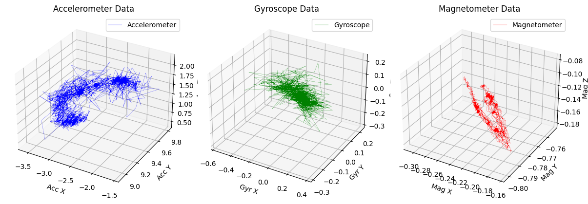
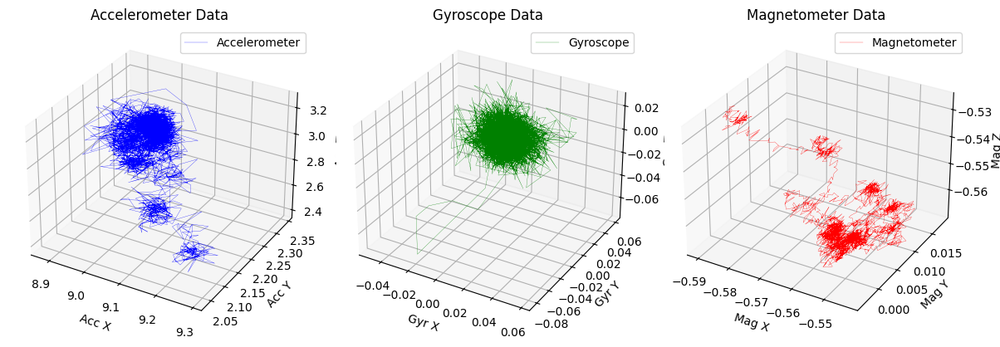
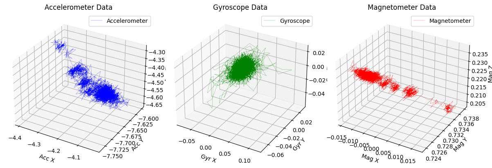
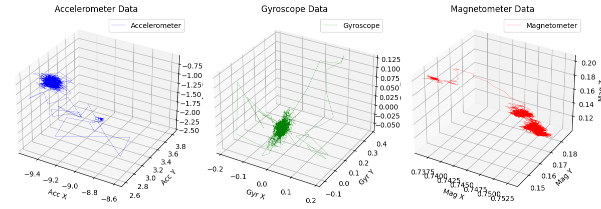
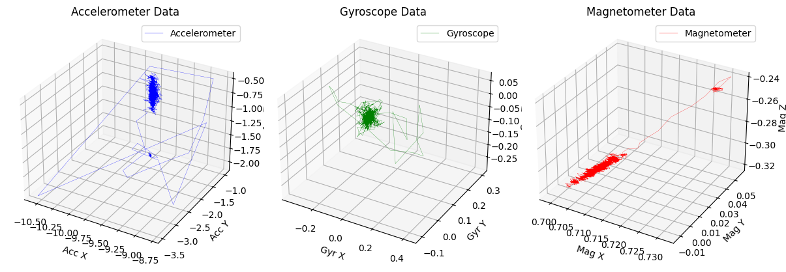
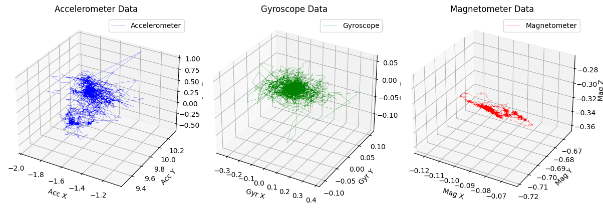
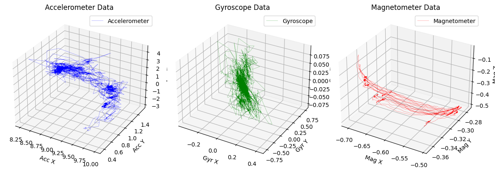
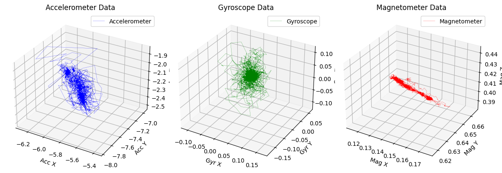
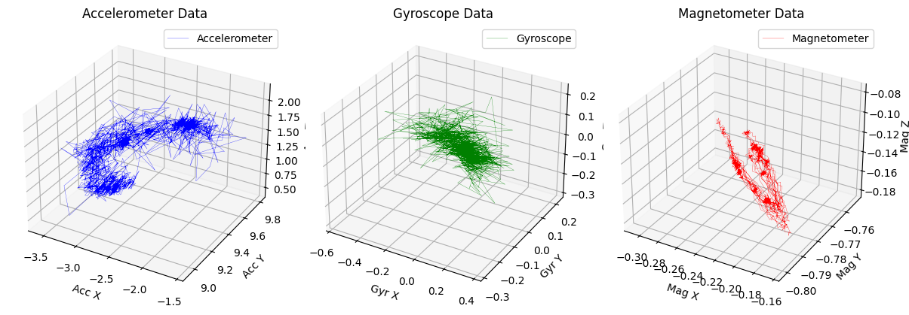
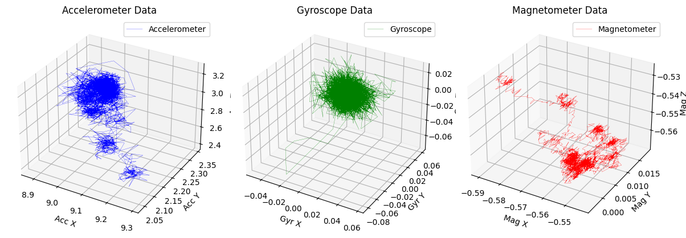
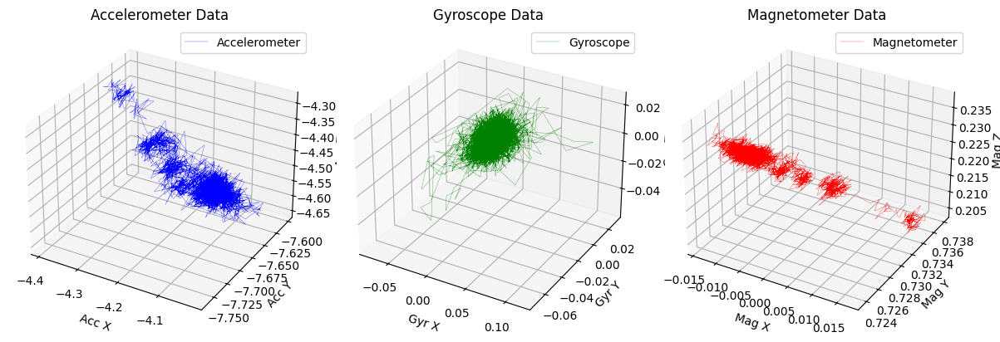
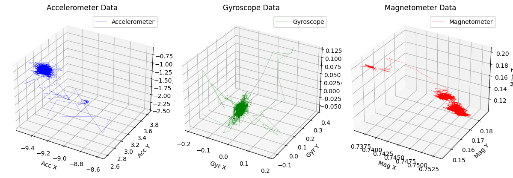
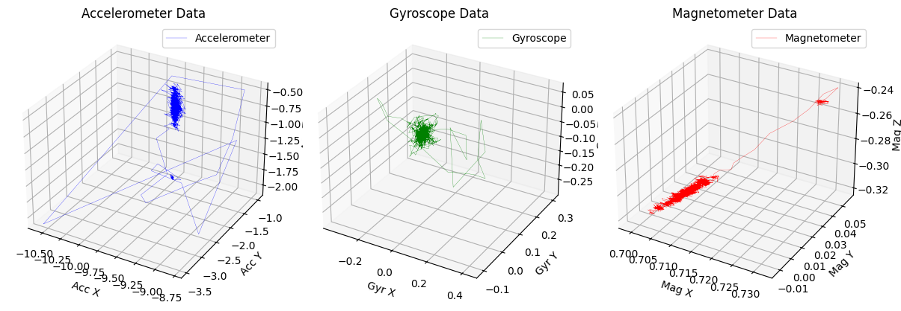
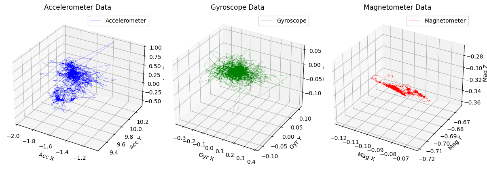
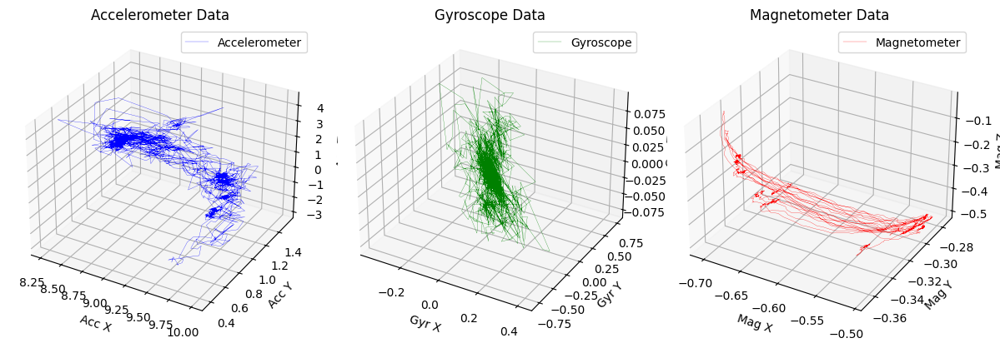
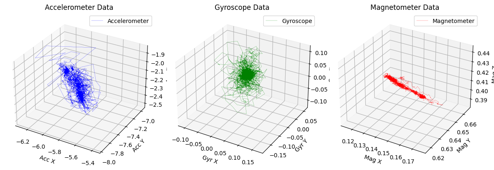
2.2. Particiones#
def ParticionTrainValTest(df, horizonte, ventana):
tamTrain = 14
tamValid = 7
tamTest = 7
lendf = len(df)
Train = []
Validation = []
Test = []
cont = 0
for index in range(0 , lendf-ventana-horizonte ):
end = index+ventana
if end+horizonte > lendf:
break
if cont > tamTrain+tamValid+tamTest:
cont=0
if cont < tamTrain:
X_train = df.iloc[index : end]
y_train = df.iloc[end : end+horizonte]
Train.append({
"X_train": X_train,
"y_train": y_train
})
else:
if cont < tamTrain+tamValid:
X_val = df.iloc[index : end]
y_val = df.iloc[end : end+horizonte]
Validation.append({
"X_test": X_val,
"y_test": y_val
})
else:
if cont < tamTrain+tamValid+tamTest:
X_test = df.iloc[index : end]
y_test = df.iloc[end : end+horizonte]
Test.append({
"X_test": X_test,
"y_test": y_test
})
cont += 1
return Train , Validation , Test
2.3. Entrenamiento y métricas#
modelos = {
"K-NN": KNeighborsRegressor(n_neighbors=3),
"Linear Regression": LinearRegression(),
"Ridge Regression": Ridge(),
"Lasso Regression": Lasso(),
"Random Forest Regressor": RandomForestRegressor(n_estimators=100, random_state=0),
"XGBoost Regressor": XGBRegressor(n_estimators=100, random_state=0),
"SVR": SVR(kernel='rbf')
}
def metricas(y_true, y_pred):
mape = mean_absolute_percentage_error(y_true, y_pred)
rmse = np.sqrt(mean_squared_error(y_true, y_pred))
r2 = r2_score(y_true, y_pred)
return {"MAPE": mape, "RMSE": rmse, "R2": r2}
def residuales(residuals):
results = {
"Ljung-Box": acorr_ljungbox(residuals, lags=[10])[1][0],
"Jarque-Bera": normal_ad(residuals)[1]
}
return results
horizontes = [7,14,21,28]
ventanas = [7,14,21,28]
results = []
for archivo in dataframesEntrenamiento:
for ventana in ventanas:
entrenamientos, validacions, pruebas = ParticionTrainValTest(archivo, horizontes[0], ventana)
for entrenamiento in entrenamientos:
X_train = entrenamiento['X_train']
y_train = entrenamiento['y_train']
X_test = pruebas['X_test']
y_test = pruebas['y_test']
for nombre, modelo in modelos.items():
modelo.fit(X_train, y_train)
y_pred = modelo.predict(X_test)
residuals = y_test - y_pred
metrics_results = metricas()
residual_results = residuales(residuals)
results.append({
"Modelo": nombre,
"τ": ventana,
"MAPE": metrics_results["MAPE"],
"RMSE": metrics_results["RMSE"],
"R²": metrics_results["R²"],
"Ljung-Box p-value": residual_results["Ljung-Box p-value"],
"Jarque-Bera p-value": residual_results["Jarque-Bera p-value"]
})
break
break
break
break
X_train
---------------------------------------------------------------------------
TypeError Traceback (most recent call last)
Cell In[39], line 12
10 X_train = entrenamiento['X_train']
11 y_train = entrenamiento['y_train']
---> 12 X_test = pruebas['X_test']
13 y_test = pruebas['y_test']
15 for nombre, modelo in modelos.items():
TypeError: list indices must be integers or slices, not str
tau_values = [7, 14, 21, 28]
results = []
# Entrenamiento y evaluación para cada modelo y cada horizonte temporal
for tau in tau_values:
train, validation, test = ParticionTrainValTest(data['magnetic_field'], tau)
for model_name, model in models.items():
# Ajuste del modelo
model.fit(np.arange(len(train)).reshape(-1, 1), train)
# Predicciones en conjunto de validación y prueba
val_predictions = model.predict(np.arange(len(train), len(train) + len(validation)).reshape(-1, 1))
test_predictions = model.predict(np.arange(len(train) + len(validation), len(train) + len(validation) + len(test)).reshape(-1, 1))
# Cálculo de métricas para validación y prueba
val_metrics = calculate_metrics(validation, val_predictions)
test_metrics = calculate_metrics(test, test_predictions)
# Análisis de residuos
residuals = test - test_predictions
residual_results = residual_analysis(residuals)
# Guardar resultados
results.append({
"Modelo": model_name,
"τ": tau,
"MAPE": test_metrics["MAPE"],
"RMSE": test_metrics["RMSE"],
"R²": test_metrics["R²"],
"Ljung-Box p-value": residual_results["Ljung-Box p-value"],
"Jarque-Bera p-value": residual_results["Jarque-Bera p-value"]
})